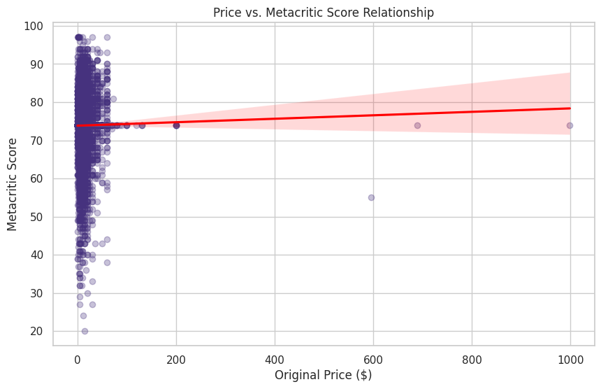
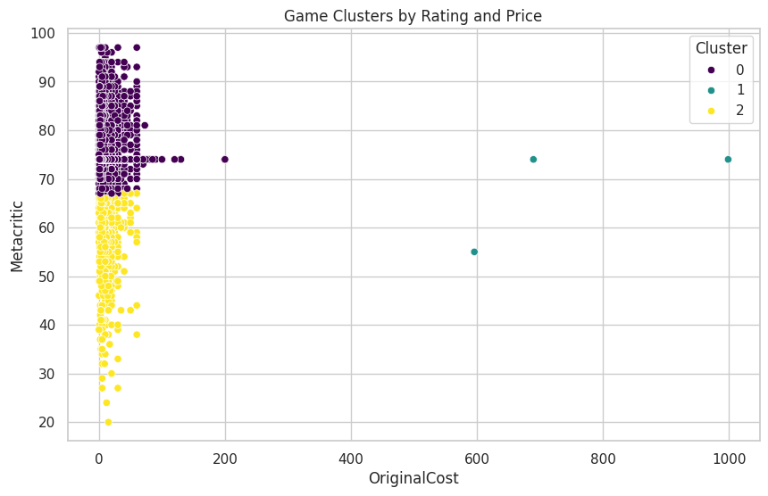
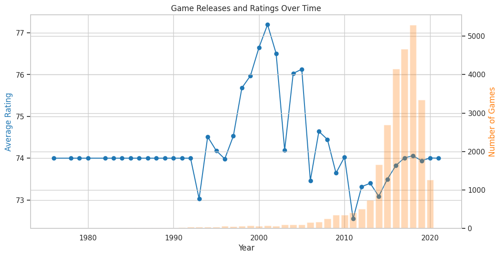
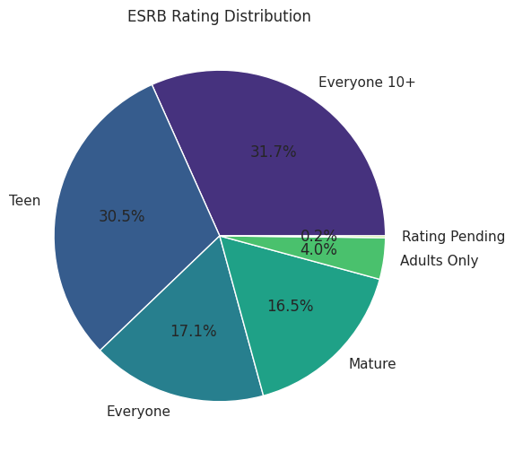
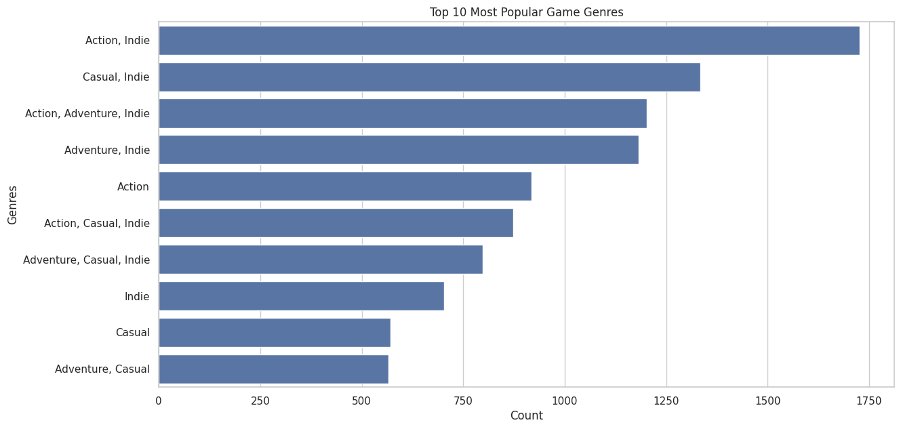
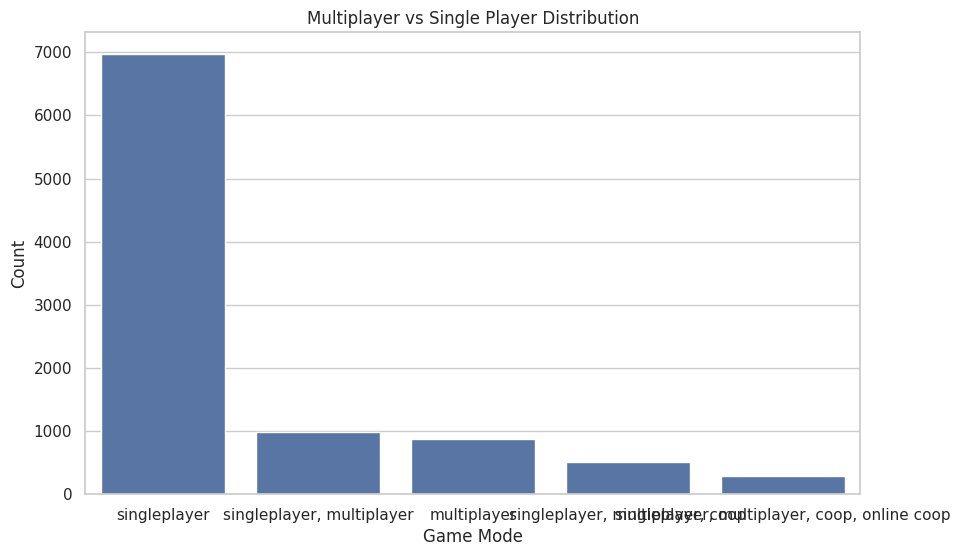
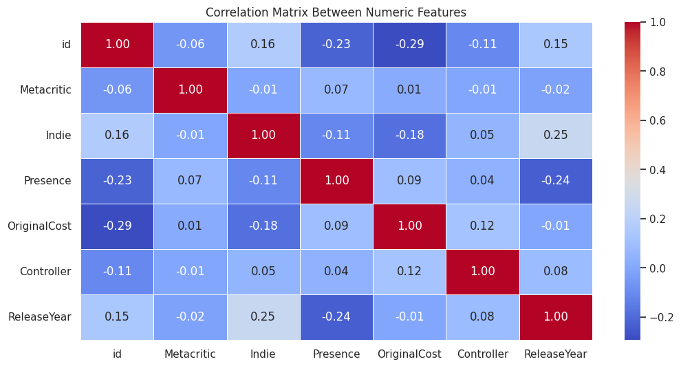

Data Analysis & Visualizations
1. Price vs. Ratings
Does spending more money on a game guarantee a better experience? Our analysis explores this correlation.
2. Game Clusters
Games are grouped based on pricing and ratings, revealing patterns in market segmentation.
3. Time Series: How Have Ratings Changed?
The trend of Metacritic ratings over the years. Are games improving?
4. ESRB Ratings
Which age ratings dominate the market? A look at the distribution.
5. Most Popular Genres
The most common genres and what players love the most.
6. Single-Player vs. Multiplayer
Is multiplayer gaming overtaking single-player experiences?
7. Feature Importance

Which factors influence a game’s success the most?
8. Correlation Matrix
How different game attributes relate to each other.